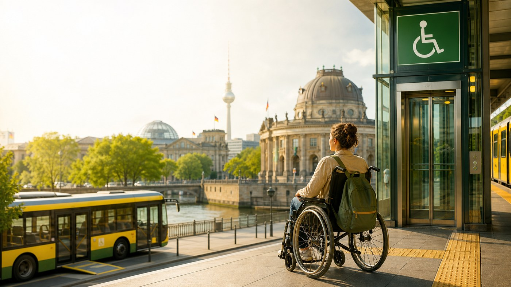

Choose your mobility need, day shape and transfer tolerance. Get a practical Berlin plan: official checks, safer transport choices and a realistic backup.

Plan
Build the route around reliability.
For Berlin accessibility, the best plan is usually not the shortest map route. It is the route with fewer fragile links.
Planning confidence: medium until lift status is checked.
Best first moveUse a barrier-free route search, then check lift outages before leaving.
Route shapeFavor fewer transfers and one compact sightseeing area.
BackupKeep a bus, tram or taxi fallback if one elevator controls the day.